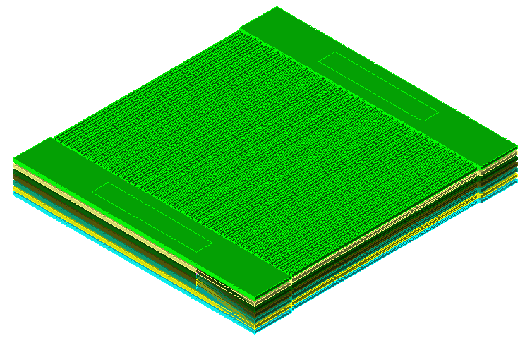
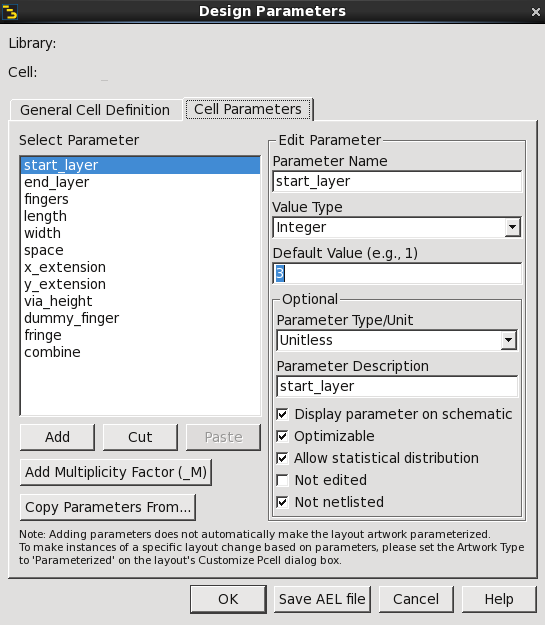
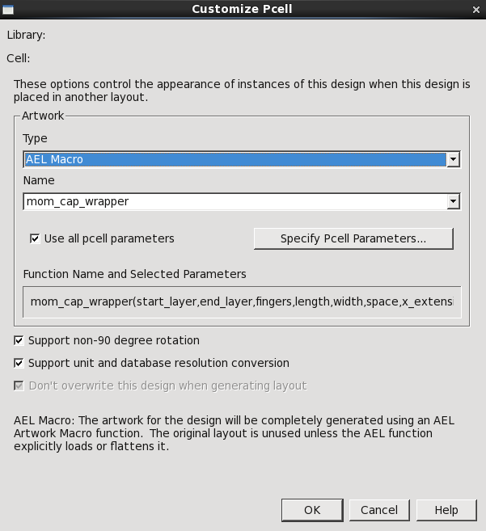
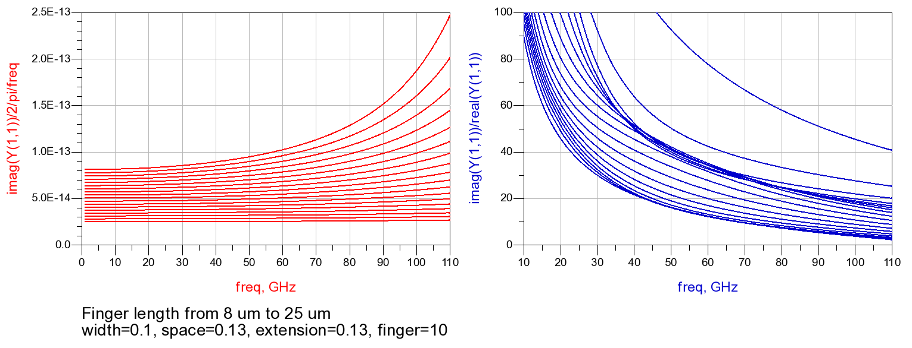
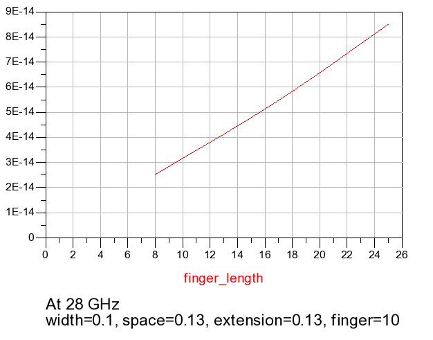
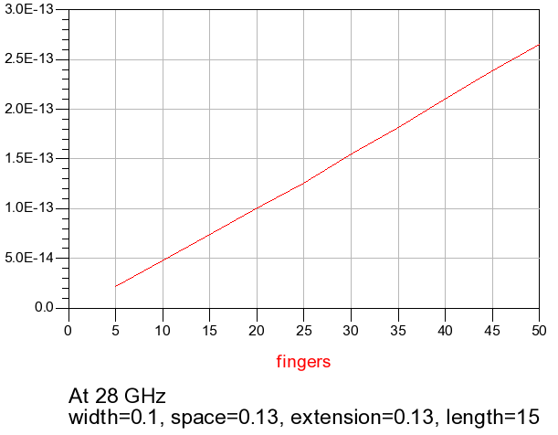

使用ADS创建MOM电容Pcell
在集成电路设计中，Pcell (Parameterized Cell)指只需要输入参数就可以通过程序代码自动创建的版图。例如，代工厂提供的工艺库中就含有常用的晶体管、电容以至电感的Pcell文件，在版图设计时只需要指定一些参数（在晶体管设计中例如栅长、栅宽、栅指数等）即可自动生成对应的版图。这极大简化了设计流程，缩短了设计周期。
然而，代工厂提供的预设工艺库有时可能不能满足设计要求。比如说，用户可能想设计一系列更高Q值，但精度较低的fringe电容，而工艺库却没有提供。此时，自定义Pcell可以省去重复设计的麻烦。常用的设计软件如Cadence、ADS都支持通过相应的编程语言（SKILL和AEL）自定义创建Pcell。
此外，也可以自行撰写脚本文件（例如Python），生成EGS格式的版图并导入ADS。使用这种方法时，也可以通过ADS的命令行工具进行批量仿真，十分方便。自行撰写脚本文件比较通用，可操控性强，但需要大量的编程工作（编写基础的图形类库）。
由于ADS集成了Momentum电磁场仿真软件，并支持通过自带的AMC (Advanced Model Composer)对Pcell进行自动仿真和建模，在设计中应用较为广泛。本文以电容设计为例，介绍了基于ADS的AEL语言的Pcell设计和批量仿真建模。
预备
这一部分介绍了一些预备知识。
电容
电容是射频集成电路设计必不可少的组件。它可以构成LC谐振网络，提供交流耦合、直流阻断。常见的电容类型有晶体管电容、二极管电容、MIM（Metal-Insulator-Metal）电容以及MOM（Metal-Oxide-Metal）电容。由于栅氧较薄，晶体管电容面积紧凑，但存在电压调制效应。就MIM和MOM而言，虽然Oxide也是一种Insulator，但MOM电容通常指代同层两个金属插指之间和其间氧化物形成的电容，而MIM以平板电容为主，有时特指模拟/射频工艺中提供的额外提供两层金属间的电容。
电容的一个简单模型是RC并联网络，其等效R为：
其等效C为：
品质因数定义为：
但这个简单模型只能在工作频率附近的窄带使用，针对电容更宽带的建模则需要将电感考虑进去。此时，模型为：

此时，直流电阻为：
高频电阻为：
低频电抗为
谐振频率（虚部为0）为：
因此，可以将这些参数从仿真中提取出来。
关于MOM电容的版图，其既可以是简单的同层结构

也可以是交错的立体结构。此时，其电容密度较大：

3D透视图如下：

AEL语言
AEL（Application Extension Language）是Keysight公司开发的基于C语言的通用编程语言，可用于配置、扩展ADS设计环境。其与C语言的区别主要有：
- 没有预处理，不支持#if, #ifdef, #ifndef, #endif, #define, #undef以及#include，但增加了load()函数用于代替#include
- 没有类型，变量声明使用decl，函数声明使用defun，函数可以在函数内定义
- 支持复数和列表，但没有结构
- 拥有变量回收机制
其列表的语法为：
1 | decl a = list(1,2,3); |
其数组语法为：
1 | decl x = {1+2i, 3+4i, 5+6i}; |
对于矩阵：
1 | decl m = {{1},{2},{3}}; |
AMC
AMC (Advanced Model Composer)可以用于无源器件的模型生成，它可以根据预设参数和频率范围对Pcell进行自适应EM仿真，并根据结果建立模型。对于没有仿到的点，也可以根据其算法进行插值，得到较为精确的结果。
实现
实现绘制电容的Pcell代码主要为：
1 | load("vias.ael"); |
测试
测试流程
为了运行代码，需要在ADS中进行一系列设置：
在ADS库目录下新建mom.ael文件，加入上述代码；
在ADS库目录下新建eesof_lib.cfg文件，加入
1
BOOT_AEL=./mom.ael
此时，当ADS载入库时，代码会自动加载。为了强制重载，可以点击 File > Recent Workspaces中这个库的名字；
新建一个空白layout，命名为momcap，点击File > Design parameters，在其中设置各个参数的名称、类型、默认值、单位和描述。设置完成后点击确认。

点击File > Customize PCell，选择artwork类型为”AEL Macro“，将函数名写为主函数名。设置完成后点击确认。

保存layout；
另建一个名为momcap_sweep的layout，拖入刚才创建的momcap。此时应该出现默认值下的电容图形。在两端加上pin并设置好EM仿真。在EM > Component > Parameters中设置要扫描的变量名和范围（只能设置两个连续型变量），并将变量名填入Pcell的参数中。在EM > Component > Advanced Model Composer > Create Model中开始仿真；
仿真结束后，点击EM > Component > Create EM Model and Symbol，在新建的原理图中加入symbol，设置好参数即可进行电路仿真。
测试结果
首先对插指长度进行扫描，绘制了等效电容和等效Q值的曲线：

事实上，AMC并没有对8-25 um区间范围内的每个点进行仿真，而是在之前仿真结果的基础上进行插值，因为仿真速度非常快，适用于快速迭代和自动优化。仿真结果较为精确。
当观察28 GHz处的等效电容时随插指长变化时，有：

当观察28 GHz处的等效电容时随插指数变化时，有：

可以发现，在28 GHz处电容值基本随插指长、插指数而线性变化，因而实际设计时可以通过长度、插指数进行估算，进一步节省时间。
参考
- Keysight, Advanced Design System Documentation
- Behzard Razavi, RF Microelectronics
- Post link: https://triblemany.github.io/archives/97db45b0/ads-mom-pcell.html
- Copyright Notice: All articles in this blog are licensed under BY-NC-SA unless stating additionally.